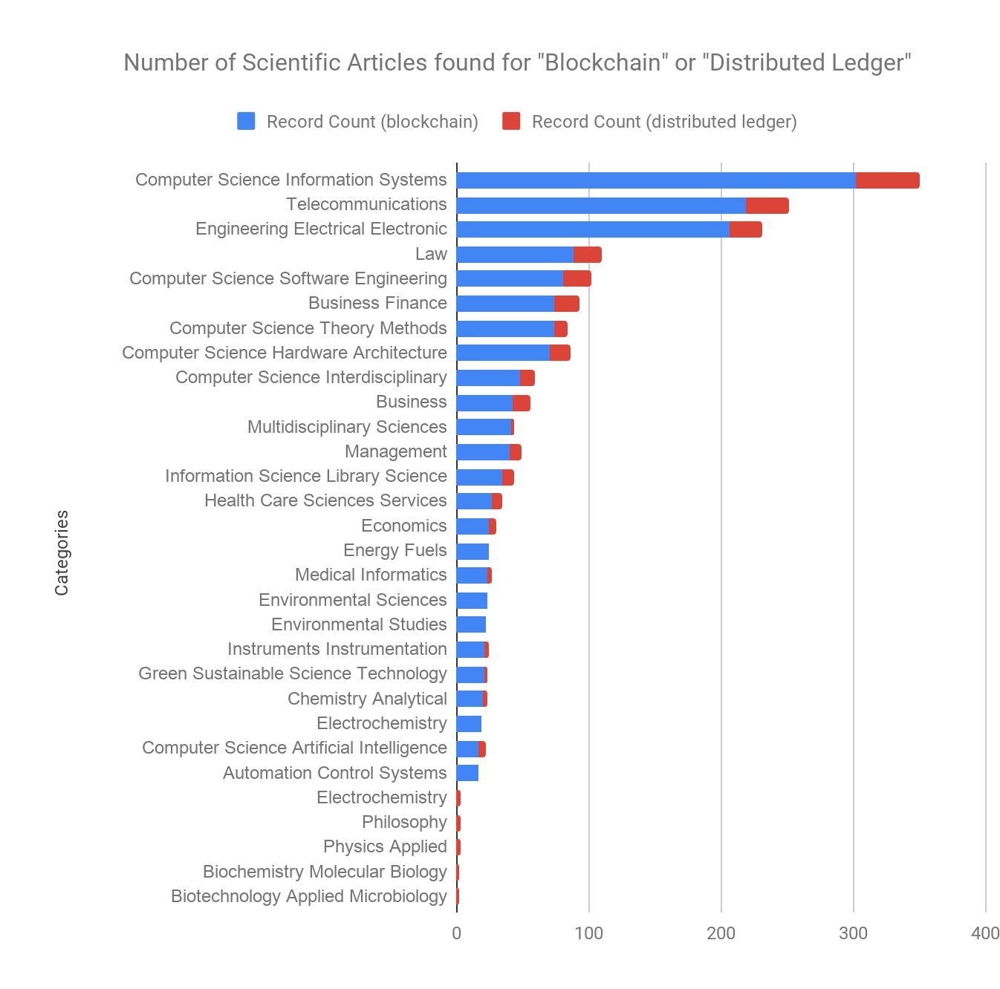
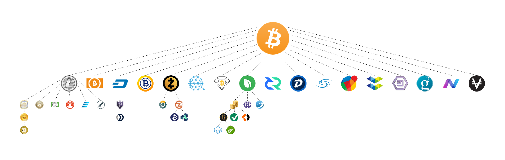
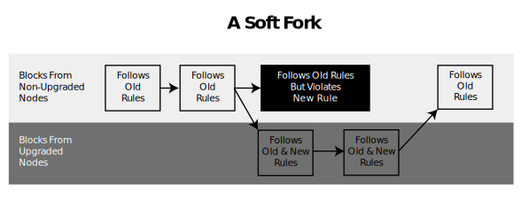
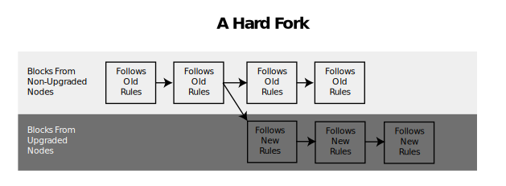

4. Blockchain Socialisation Patterns
In the next section we explore how blockchain came to be a social phenomenon. The challenge lies in getting past the deterministic attitude that the trajectory of blockchain was purely one of a technological innovation that was welcomed, grew, and proliferated organically -- and then impacted people, collectives, companies, enterprises, and social institutions rather than also being shaped and impacted by them.
We describe how blockchain interacts with people and social structures, using what has been termed the socialisation patterns to determine how blockchain is incorporated into pre-existing structures. We observe and study two versions of this model: an exogenous model, which remains distinct from technology and describes how society attempts to adapt it; and an endogenous model, which is integrated into technology in order to describe its assimilation into social structures.
4.1. Exogenous socialisation patterns
We begin by looking at the exogenous model of the socialisation of blockchain. This refers to motion from outside the blockchain towards the inside. This model can help to explain how people and social structures incorporate blockchain through language and normalisation.
The evolution of terminology
The development of the language used around blockchain is an important aspect of the socialisation process, enabling people to develop an abstract representation of the technology. The Bitcoin protocol and its operation based on blockchain technology resulted in new terms coming into usage, such as cryptoassets and distributed ledgers. The proliferation of cryptographic currencies transacted over decentralised networks led to a differentiation between these types of assets and other state-issued or local currencies. The specific terms cryptocurrencies or cryptoassets were assigned to them. Similarly, the term Distributed Ledger Technology (DLT) was formulated to explain the technical concept of blockchain as well as to take it further.
These terminological changes follow on from the growth and popularisation of scientific knowledge on the subject as well as from the popularisation of the field as a whole. In the original document by Satoshi Nakamoto, the term 'blockchain' does not appear; instead, the author uses the term 'distributed timestamp server'. Hal Finney first used the term blockchain to refer to Bitcoin's timestamping system during initial discussions on the Metzdowd mailing list. In the years that followed, some scientific papers presented blockchain as a distributed database technology, while others referred to it as a general ledger, a decentralised ledger, or a shared ledger. The term distributed ledger took hold in 2015, though it had barely been used before that date (Figure 42).
Figure 3. Articles found on Google Scholar by keyword. The total may exceed 100% as multiple keywords can be used in an article.
This increase in usage was prompted in particular by reflections on the use of permissions in the various blockchains. In 2015, a paper on permissioned blockchains by R3 drew a clear distinction between a blockchain and a distributed ledger. It explained that blockchains, such as Bitcoin, are public. To differentiate between consortium blockchains and public blockchains, the author uses the term Distributed Ledger. In 2016, Richard Brown, Head of Technology at R3, published a whitepaper on the Corda software entitled Corda: A Distributed Ledger for Recording and Managing Financial Agreements. In this document the author argued that public blockchain architectures such as Bitcoin and Ethereum did not fulfil the information-sharing requirements of various legal agreements used by major industries, nor did they respond adequately to other challenges these players faced. According to the author, a blockchain that was not public was not a blockchain. Expanding on Tim Watson's paper, Consensus-as-a-service, the author presented Corda, and all other private and consortium blockchains, as distributed ledger technologies. Blockchain was to be defined as a public distributed ledger.
As a result of this distinction, intended to address the needs of large corporations, in 2016 the Chief Scientific Adviser to the UK Government, Sir Mark Walport, published a government report entitled Distributed Ledger Technology: Beyond Blockchain. In 2017, the World Bank published Distributed Ledger Technology (DLT) and Blockchain.
A study of the usage of these terms on the Reddit.com community website, however, reveals that the term 'distributed ledger' is currently only marginally used in comparison with the term blockchain (Figure 43). This is also the case in academic scientific publications (Figure 44). A peak in the usage of both terms occurred in September 2018, in keeping with intense media coverage of the subject during this period. To interpret the subsequent drop as the result of a sense of fatigue around blockchain would seem to be exaggerated. It appears rather that usage of these terms was becoming diluted by the proliferation of other terms. In the remainder of this report we continue to use the term blockchain.
Figure 4. Number of posts on Reddit.com from 2014 to 2019.

Figure 5. Number of scientific articles found on the Web of Science bibliographic databases (https://clarivate.com/products/web-of-science/) for 'Blockchain' and 'Distributed Ledger'.
Normalisation strategies
The exogenous motion towards the socialisation of blockchain can also be observed in the process of normalising the field. Efforts at normalisation extended from the period of disruption following the conceptual upheavals caused by the discovery of the potential applications of blockchain. These upheavals included both the influence blockchain could have on human activities, and the ways in which it could interact with institutions and regulations. The normalisation process was a natural reaction to the potentially paralysing effect of this disruption, intended to adapt blockchain and set out models of behaviour to preserve the coherence and functional sustainability of institutions. Each behavioural model is embodied in a set of social norms intended to regulate and govern a particular set of human activities. In the context of blockchain, the normalisation strategy is comprehensive in that it covers all dimensions of normalisation at the same time:
-
The legalistic dimension, in which the norm is de jure, i.e., binding and obligatory within the framework of legal norms formalised in law.
-
The private-sector dimension, often applicable to technical standards, in which the norm aims to regulate the behaviour of members of an industry and their relations with third parties on a voluntary basis.
-
The advisory dimension, in which the norm aims to encourage desirable and timely behaviours.
In the field of blockchain, the legaliste dimension of normalisation involved attempts to impose national regulations on cryptocurrencies. The complexity of the field arises from the fact that cryptocurrencies based on public permissionless distributed ledger protocols (i.e., public blockchains such as Ethereum and Bitcoin) are not associated with any legal entity. They are essentially borderless and operate without the support of institutions. As such, they cannot be subjected directly to national regulations and could be seen as a proper case for global law.
Legal authorities at state, regional, and local level in various countries are currently discussing possible actions to address this or are already taking action. Depending on the prevailing legal culture in each country, some are seeking to regulate individual usages as they arise, while others are creating the conditions required to experiment with the technology in an advisory environment before implementing legislation, then gradually adapting it.
In some countries national regulations have banned the use of cryptocurrencies for financial transactions, while in others their use as money has been prohibited, with the principal aims being to combat the use of funds for illicit purposes, protect consumers and investors, and maintain the integrity of markets and payment mechanisms. In 2018, the Bank for International Settlements (BIS) identified 151 measures and declarations emanating from the authorities and representative bodies of Australia, China, Chinese Taipei, the European Union and its member states, Gibraltar, Hong Kong, India, Indonesia, Israel, Japan, Korea, the Philippines, Singapore, Switzerland, and the United States as well as from international organisations, groups and regulatory bodies such as Eurozone institutions, BIS, IOSCO, CSF, and the G20. After this study, it advised regulatory authorities to use certain tools. To combat illicit activity, it recommended focussing actions on cryptocurrency infrastructure providers, i.e., the intermediaries who manage cryptocurrency portfolios. In particular, it recommended extending certain existing regulations, such as the laws on anti-money laundering (AML) and combatting the financing of terrorism (CFT) as well as laws intended to protect consumers and investors. It also recommended addressing the interoperability of cryptocurrencies with traditional financial institutions such as banks and credit-card providers by drafting and enforcing regulations regarding the validity of cryptocurrencies in regulated markets as well as by moderating the ways in which banks could trade cryptocurrencies on behalf of their customers. Lastly, the BIS recommended that the legal status of cryptocurrencies be clarified. It invited countries to define whether cryptocurrencies were to be treated as securities and regulated as such, or as generic assets that did not necessarily require special monitoring practices.
The normalisation strategies applied to blockchain also have a private dimension through processes of technical standardisation. According to the various standardisation bodies, whether national (such as SNV in Switzerland, ANSI in the United States, or AFNOR in France) or international (such as ISO), technical standardisation is the process whereby a common, non-binding, and noncoercive technical reference framework is developed consensually by an adhoc grouping of private actors, generally from the same sector. We have already seen this kind of strategy used in the private sector with R3, for example. Also noteworthy is the Enterprise Ethereum Alliance (EEA), which brings together nearly 300 organisations of different sizes, including JPMorgan Chase & Co., Microsoft Corp., and British Petroleum as well as startups such as NICO. This alliance aims to normalise the use of the public blockchain Ethereum.
One of the first international organisations to take an interest in the normalisation of blockchain was the World Wide Web Consortium (W3C), which launched the Blockchain Community Group in 2016 to establish message formatting standards and propose guidelines for use cases such as interbank communications. Also, in 2016, on the initiative of Australia, the International Organisation for Standardisation (ISO) established the ISO/TC 307 international technical committee to deal with blockchain standardisation. This committee is made up of delegations from various national standardisation bodies. Each delegation includes 'experts' from the corporate, industrial, and academic sectors. A total of 54 countries take part in the discussions, either as members or observers. The participating countries are mainly from Europe (24 countries, including Russia), North and Central America (6 countries) and the Asia-Pacific region (12 countries). Countries from South America, Africa, and the Middle East are poorly represented. International organisations are also represented through liaison officers, with The Society for Worldwide Interbank Financial Telecommunication (SWIFT), the European Commission, the International Federation of Surveyors, the International Telecommunication Union, and the United Nations Economic Commission for Europe participating in meetings, recommending experts and submitting comments, but having no power to vote on future standards. According to ISO, the majority representation from countries with advanced levels of industry and expertise in the area reflects the highly technical nature of blockchain development.
As far as ISO is concerned, blockchain technology is already widely implemented and has potential applications in all sectors of industry as well as, more specifically, in traceability applications, accounting and regulatory compliance (including financial and payment systems, border control, logistics and medical records). It is also possible that the spread of blockchain will be so prolific that it becomes an invisible part of many of the services we use. In order to be able to address all aspects of blockchain, ISO established eleven working groups to deal with standards relating to terminology, privacy, technical architecture, security and confidentiality, identity management, smart contracts, governance, and interoperability. A strong focus was placed on the 'internormalisation' of the ISO standards and their adequacy regarding changes to legal norms and government requirements in different countries (e.g., compliance with the GDPR). The draft agenda proposed by ISO schedules the public release of the standard for 2020.
The advisory dimension of the normalisation process is embodied in the ways in which organisations are created to formulate legislative proposals, guidelines and reports in order to influence the regulation of blockchains. This dimension is formalised through forums, roundtables, and the publication of reports by consulting firms like KPMG), tech companies such as IBM and thinktanks as well as blockchain working groups and other international organisations. In 2018, the European Commission created the European Blockchain Partnership (EBP), which incorporated the EU Blockchain Observatory and Forum, to map initiatives, monitor developments and inspire joint action. One of the duties of the forum is to publish reports on different aspects of blockchain, such as identity or governance. In the same vein, the European Commission gave strong support to the creation in Belgium in 2019 of the International Association for Trusted Blockchain Applications (INATBA), which brought together 105 organisations based in Europe, North America, and Asia. The purpose of this association is to establish a dialogue between public authorities and regulatory bodies to facilitate convergence of the applicable legal frameworks.
Another important advisory aspect to the blockchain normalisation process comes from the domain of technology applied to financial services ('fintech') and is known as the 'Regulatory Sandbox'. First implemented in the UK in 2015, this approach is now also being used in Switzerland, Australia, Singapore, Malaysia, Hong Kong, Thailand, and the United Arab Emirates. Regulatory Sandboxes are the regulatory frameworks created by financial regulators such as the FCA and FINMA to test new financial services. In Switzerland, for example, the Blockchain/ICO working group -- set up by the State Secretariat for International Finance (SIF) with the participation of the Federal Office of Justice (FOJ) and the The Swiss Financial Market Supervisory Authority (FINMA) -- proposed that a sandbox be set up to trial blockchain-related business models. Switzerland already has a sandbox for projects in the banking sector. The working group seeks to create a specific sandbox to solve regulatory problems associated with companies engaged in the development of blockchain-related services, particularly by creating new authorisation categories. The challenge involves the implementation of domain-specific regulatory frameworks that can identify and target issues specific to blockchain applications.
The limited scope of this report prevents an exhaustive study of this subject, but it should be noted that the issue of normalisation is one of the most widely discussed topics surrounding blockchain technology. Normalisation strategies appear to be the preferred method for the socialisation of this technology. This has resulted in attempts to create ad-hoc infrastructures in order to control behaviour, such as the European Blockchain Partnership (EBP), which is working towards the establishment of a European Blockchain Services Infrastructure (EBSI) capable of respecting EU legal rights and norms in the areas of privacy, cybersecurity, interoperability, and energy efficiency as well as the idea of governments also having the ability to create sovereign cryptocurrencies.
Blockchain also demonstrates another dimension of normalisation known as regulation by design, whereby a technical system makes use of its own set of rules in order to impose behavioural constraints on people. This dimension will be explored later in this report as an endogenous model of socialisation.
The banalisation of blockchain
Since it first emerged, blockchain has been perceived as an atypical concept and one that is difficult to tackle. The fact that its initial field of application was a currency certainly played an important role in this situation. The interest Bitcoin aroused within circles holding what some might call alternative ideological views, such as Cypherpunk and Wikileaks, as well as the importance of decentralisation to the concept, have generated a degree of scepticism. The fact that it is a distributed system has only added to the confusion. Regulatory systems operate through clearly identifiable central bodies which are accredited as being responsible for a particular sector. The promise of blockchain is 'to do away with intermediaries' -- which is what many institutions consider themselves to be.
It is, above all, the uses of the technology which will drive its banalisation. The aim is to create uses that will render blockchain both familiar and ordinary. An example would be making cryptocurrencies available for purchase at special ATMs. The terminology associated with the field has also been chosen in order to contribute to its banalisation. Presenting private blockchains as simple distributed ledgers enables the use of vocabulary that the corporate sector is accustomed to. The concept of the ledger is commonly known; this is just a version of it that uses new technology to provide certain advantages.
In the world of finance, pioneering cryptoasset management companies such as Bitwise Asset Management sought to demonstrate to the US Securities and Exchange Commission (SEC) that the Bitcoin market was sufficiently regulated and stable to support the creation of an exchange-traded fund (ETF). Bitwise argued that Bitcoin was behaving as expected for an asset of this type and wanted to offer conventional financial services in the shape of investment funds, which provided exposure to this asset. Bitwise was the first to create a 'cryptocurrency index fund' providing exposure to the 'top 10 cryptos'. To make it more familiar to people, it introduced the fund as the 'S&P 500' of the cryptoworld. These cryptoassets were presented as simultaneously innovative and banal; the inevitable result of changes brought about by the digital transformation.
Blockchains were also described as having uses in humanitarian aid, especially for people without access to conventional financial services (known as 'unbanked' people), as well as in personal identification. Binance Charity and Libra both justified the creation of new systems in this way, while avoiding competing with existing institutions.
It is through this process that blockchain is gradually becoming an IT/financial sector like any other.
4.2. Endogenous socialisation patterns
In the following section we examine the endogenous blockchain socialisation model, the movement from inside blockchain towards the outside. We explain how the technical structure of blockchain formalises certain modes of administration and imposes specific social behaviours to ensure its operation over time.
Project financing methods
The financing aspect is characteristic of the blockchain socialisation process in that its development led to the design of an ad hoc financing model: the ICO or Initial Coin Offering, a conceptual evolution in the investment field.
In January 2012, J.R. Willet revealed Mastercoin through a message on the Bitcointalk forum, which included a link to download a document entitled The Second Bitcoin Whitepaper vs 0.5 (Draft for Public Comment). The document included a description of the technical system and a specific model for funding the project. The author explained that not being prepared to neglect his family by taking the time to explain his project to venture capitalists, he had created an alternative fund-raising model he called the Initial Distribution of Mastercoins. This model was intended to provide the funds required to pay developers to write the code and fully implement the protocol.
Following the prescriptions laid out in the model, an entity responsible for the Mastercoin project published a digital wallet address to collect Bitcoins when the Mastercoins were sold to the public. The entity also published the deadline before which Mastercoins could be purchased. Anyone sending Bitcoins to this address before the deadline was recognised by the protocol as having an equivalent number of Mastercoins. For example, if a person sent 100 Bitcoins to the address, they would have 100 Mastercoins after the deadline. The following year, Willet published version 1.0 of his whitepaper on BitcoinTalk, together with a call for funds for the Mastercoin project. As with the Genesis block from which the first Bitcoins were created, Mastercoins had a similar starting point called the 'Exodus Address'. Anyone who sent Bitcoins to this address between 31 July 2013 and 31 August 2013 received the equivalent number of Mastercoins as well as additional Mastercoins depending on the transaction date. The first Mastercoin transaction was recorded in early August, but the biggest wave of transactions occurred following its presentation to a group of cryptocurrency investors (known as Bitangels). The funding total reached 4,750 BTC, over US$ 500,000 at the time. This experiment created a precedent. Between July 2014 and August 2014, the Ethereum project financed its development through this model by collecting 31,500 Bitcoins, worth US$ 18.4 million at the time. This ICO enabled the Ethereum Foundation to be established in Zug, to supervise Ethereum software development.
The ICO model has enabled cryptocurrency projects to finance themselves on a global scale without going through the traditional financial intermediaries of banks and capital markets. The initiators of projects publish a document that is usually referred to as a 'whitepaper'. This whitepaper can have various characteristics depending on the intention of the holders. It describes the technical issues, but also covers business matters, seeking to be comprehensive and to anticipate the questions investors will typically pose. In the context of an ICO, the whitepaper supplements the due-diligence process by providing a full written explanation of the project's goals and how the funds will be spent. The initiators of ICOs issue tokens. Tokens are different from coins, which are the native tokens of a cryptocurrency, for example, a Bitcoin. Tokens are informational representations of assets. They are presented as having scarcity value, so it is best to acquire them early when this value is still low. They can be acquired by anyone during the ICO, in exchange for a cryptocurrency such as Bitcoin or Ether. The funds then generally go on to be used by the initiator of the ICO to finance research or protocol development.
On the investor side, the tokens have the function and utility described in the whitepaper, which may differ with each project. ICOs initially enabled regulations to be circumvented by creating a legal vacuum: Tokens had no value per se, not being associated with a financial counterpart, so the ICOs were not subject to regulation by national financial authorities.
The principle was based on an extension of the crowdfunding model, in which a pre-sale, represented by tokens, was organised offering the preferential use of goods or services in the future. The underlying idea was that if the project was successful, the tokens associated with it would gain in value and be traded in the marketplace. These unregulated tokens, akin to donations, went on to cause a good deal of speculative excitement. In 2018, the number and size of ICOs reached a peak, particularly with the Telegram messaging service and the EOS platform (TON US$ 1.7 billions, EOS US$ 4 billions).
The success of these types of financing projects (Figure 45) led to the proliferation of fanciful projects as well as attempts at fraud. Given the levels of excitement generated, some banks, such as Zuger Kantonalbank, refused to open bank accounts for companies whose funds came from ICOs, forcing some, like SwissBorg, to relocate their head offices. ICOs have also created categories of tokens, such as payment tokens, utility tokens, and security tokens. Payment tokens can be used as a means of payment, kept in a wallet by investors, or exchanged with other tokens or conventional currencies. Utility tokens provide access to services and are equivalent to pre-sales. Security tokens represent an investment in assets such as equity or membership rights.
Figure 6. ICO Market 2017--2018. Source: CoinTelegraph.
The quality of the tokens issued prior to the division shown above remains unclear. In 2017, market supervisory and control bodies such as SEC, FINMA, and ESMA called on the players involved to take action. Individual countries were attempting to create standards to regulate the field, each in different ways. In Switzerland -- a crypto-stronghold since the Ethereum tax office was set up in the canton of Zug -- FINMA and the cantonal authorities published practical guidelines explaining how companies could register there. At the end of 2018, the Blockchain/ICO working group set up by the Federal Council published a report on the legal status of blockchain technology in Switzerland. The conclusions of this report served as the basis for a draft law submitted for consultation to the cantons, political parties, associations of municipalities as well as cities and regions, in order to adapt federal law to the development of blockchains as distributed ledger techniques. This project, entitled 'The Federal Act on the Adaptation of Federal Law to Developments in Distributed Ledger Technology', was not intended to introduce specific legislation on blockchain technology -- the report states that 'the Swiss legal framework already covers business models based on distributed ledger technology (DLT) and blockchains'; rather, it was an attempt to integrate cryptoassets into substantive law by making quick, targeted changes. These included the right to return tokens in the event of insolvency and the creation of a new class of collective investment scheme (Limited Qualified Investment Funds, L-QIF) that would enable qualified investors to bring innovative products to market more quickly and without being subject to financial oversight by FINMA.
ICOs contributed to the 'blockchain hype' by diversifying the cryptocurrency offering and growing the number of application projects. After the initial frenzy, the sector has begun to calm down. Blockchain investment types have evolved to comply with regulatory standards such as STO and ISO. ICOs (Initial Coin Offerings) became TGEs (Token Generating Events), which provided secure investment models -- sometimes even hybrid models in which ICOs were suitable for both the general public and professional investors.
Distribution policy
The socialisation of blockchain as a technology was also determined by the conditions under which its software was distributed. The first public version of the Bitcoin code was released in 2009 on the SourceForge platform, with a notice that the code was being distributed under the ownership conditions of the MIT/X11 licence. This meant the authors of the original code had agreed to grant certain rights to all persons receiving the code, including the right to sell it and to change its licence. Projects that grew out of Bitcoin, such as Namecoin, had the same characteristic. Most projects were published on the Github platform and distributed under various types of licence. The codes of the different Hyperledger projects were shared under the Apache 2.0 licence, which had initially been designed for denser projects. The Ethereum project, in a pragmatic spirit of resilience but also in an attempt to respect the diversity of ideas the contributors have brought to each programme, shares its codes under a number of different licences -- GPL, MPL, and GNU.
The aspect common to all these licences is that they are compatible with the General Public Licence (GPL) developed by Richard Stallman and Eben Moglen in 1989. This means that all these pieces of software have been free and/or open source from the beginning. Free and open-source software licences are normative texts that set out the distribution rights for intellectual property (such as source code). Contrary to traditional approaches to IP, which grant the right to preclude certain uses, a free licence enables authors to permit certain uses of their work, including the right to study, modify, operate, and distribute it.
These types of contracts are particularly well suited to the development of computer code. A free licence regulates the relationships and responsibilities of a heterogeneous community of code developers, such as the Bitcoin developer community, to enable them to collectively manage a particular resource (the Bitcoin software) in good faith. Free licences have proven effective in software development with projects such as the Linux operating system, the Apache web server, and the Firefox web browser as well as with projects like Wikipedia. Today, development models for projects under free licences are taking the lead in innovation sectors like AI, BigData, and mobile. Leading IT industry players like Google, IBM, Facebook, and Microsoft recognise the importance of this model and have invested heavily in it through the release of code, support for specific projects, and development of products under free licences.
The increasing popularisation of free software led communities to produce specific software creation tools to help them coordinate their work and maintain quality levels as systems become more complex and the number of contributors increases. With free software, it is not just the end product that is freely available, but also the entire research and decision-making process. Having access to the source code of a piece of software means the developer can understand how it works and conduct tests during the release stage. Free and open-source software is therefore developed on the basis of the proposals, discussions, and arguments put forward by groups of individuals who are temporarily unified around a common goal.
A special set of tools and practices was developed to address these specific situations. Linus Torvald, the creator of Linux, developed the Git software -- a decentralised source code versioning system, which is also a type of distributed ledger -- to meet the specific needs of the Linux global developer community. The Git software was then used in the collective development of code for other applications. It is now the benchmark tool in the field of software development. The GitHub platform, which is based on Git, offers a number of features to aid the collective management of software development in areas such as version control and code management. In addition to these features, which were already available on the SourceForge platform initially used for Bitcoin, GitHub has become popular for its role in hosting free and open source projects. It also provides a number of functions to promote the socialisation of projects, such as task management, Wiki, flows and people, and project monitoring.
Splitting
Although not a unique attribute, the capacity to be forked is one of the salient features of software distributed under free and open-source licences. The term 'fork' refers to the splitting process, which leads to the continued development of the software independently of the community that had previously been in charge of it. Using the existing source code as the starting point, the two groups continue along independent development paths. A fork therefore results in the creation of two separate programmes (Figure 7). For example, contributors to Bitcoin's software worked on its GitHub repository by proposing (making 'pull requests') and confirming changes ('commits'). These were then discussed and possibly accepted ('merged') into the 'Bitcoin core', a central control point for the protocol. Some of the rejected changes created a fork which led to a new parallel blockchain. These various blockchains then cohabited with Bitcoin, gaining their own names, such as Litecoin and Bitcoin Cash.

Figure 7. The main forks of Bitcoin.
Though relatively rarely implemented, the fork is nevertheless an important mechanism in the world of open-source software. A fork is usually created when a community of developers cannot come to a consensus on an aspect deemed to be important. Someone who has never participated in a project can also fork it in order to use the existing source code as the basis for a project with technical similarities.
Forking is a way of proposing new social structures in order to develop new ideas, whether technical, organisational, or associated with legal issues. However, forking is viable only if a sufficiently large community forms around the new fork. The reputation of the developers and the benefits of their proposals are deciding factors in convincing enough people to come on board and make the fork viable. A balance must therefore be found between the need to experiment and the difficulty of finding sufficient community support to achieve and maintain a fork. It is common for one branch of a fork to be abandoned in favour of another that has demonstrated its usefulness after having contributed relevant innovations.
With a blockchain, the question is posed differently. The fact that blockchains are decentralised means the network participants must agree on a set of common rules. The network consists of nodes communicating in a collaborative manner. The nodes validate transactions, save them in their copy of the blockchain, and broadcast these additions to other nodes. A fork can therefore affect both the protocol and the data structure of the blockchain itself.
The term 'soft fork' is used when the proposed changes to the protocol prevent the validation of blocks and transactions that were formerly valid. In order to impose itself, this type of fork only requires most of the nodes to follow the new rule. An example of a soft fork might be the addition of a new type of transaction. Only blocks that contain the new type of transaction are rejected by the initial branch and the 'old miners' (Figure 8).

Figure 8. A soft fork: blocks violating new rules are made stale by the upgraded mining majority.
A 'hard fork' is considered more radical because it can validate blocks that were formerly invalid. Unlike a soft fork, a hard fork does not require all the nodes to follow the new rule in order to impose itself. The chains diverge to create two ledgers with the same history up to the fork and diverge from that moment on (Figure 9).

Figure 9. A hard fork: Non-upgraded nodes reject the new rules, diverging the chain.
A hard fork can be used to add new features, as in 2017, when a Bitcoin split occurred because some contributors wished to increase the capacity of the blockchain to deal with problems associated with the growth in the number of users. A hard fork can also be used to roll back certain operations. Following the hacking of The DAO (Decentralized Autonomous Organization), the vast majority of the Ethereum community favoured a hard fork to cancel the transactions on the tens of millions of dollars that had been diverted.
The network effect is essential in the adoption of a fork. The usefulness of a payment system lies in its adoption rate and therefore the number of people using it. For a network to be efficient, enough machines must be made available to digitally stamp the transactions to ensure their legitimacy (these machines are called miners in the case of Bitcoin).
A software community is therefore very similar to an institution: a social structure established over time and governed by certain rules, the purpose of which in this case is to develop a piece of software. A fork takes place when the institution cannot find common ground regarding the project's future. A fork enables the institution to divide itself and move in a new direction, creating a smaller community and a new distribution of responsibilities. Smaller groups allow members to communicate with each other more easily. The process can also be reversed if both groups decide it would be more advantageous to work together on the same project again.
Network-building Incentives
Here we explore how blockchain projects seek to continue their existence by motivating a variety of actors to participate and contribute to them.
Blockchains such as Bitcoin and Ethereum need resources to operate. In particular, transaction validation requires computing power. Participants freely choose to join the network, thus providing it with these resources. Each participant is a 'node' of the network. Strictly speaking, a node is a server running specific software.
One of the central ideas of public blockchains is that of rewarding nodes to encourage them to join the network. With Bitcoin, every time a node succeeds in validating a certain number of transactions (a block), it receives bitcoins in return.1 In this manner, new bitcoins are created. This system rewards and incentivises the creation of new nodes, while allowing bitcoins to be distributed.
The intention is for a total of 22 million bitcoins to be created. Once this predefined number of bitcoins is in circulation, no new ones will be created. The subsidies are programmed to gradually decrease over time. This incentive system is therefore only temporary but was considered necessary during the first years of the system's operation in order to encourage the initial nodes to join.
A second incentive system involves the payment of transaction fees to nodes. Once the predefined number of Bitcoins is in circulation, no new ones are created, so the nodes only receive transaction fees.
The limitation on the number of Bitcoins in circulation has greatly encouraged the adoption of the system. If successful, Bitcoin should become a very rare asset. In its early stages, Bitcoin was extremely cheap: People bought it believing the system would continue to work, and that the currency's price would increase in the future.
There are therefore three mechanisms that motivate players to participate in the bitcoin network: node subsidies, Bitcoin scarcity, and transaction fees. Most blockchains rely on similar mechanisms. Different blockchains have different incentive systems that are often their unique selling points. The incentive mechanisms are based on the assumption that individuals exhibit economic rationality. In this case, it is assumed they are trying to maximise their utility as consumers and their profit as producers. This approach to human behaviour contrasts with concepts of behavioural economics, which examine cognitive biases and other irrational behaviours.
To retain their stability, public blockchains attempt to preserve their operations despite other players seeking to disrupt them. Most nodes act honestly in order to obtain the reward. Honest behaviour is rewarded, which helps to prevent hostile and/or incorrect behaviour.
The protocol specifies the size of the blocks and the frequency with which they are created. A block contains a limited number of transactions. The faster blocks are created, the harder it is to validate them.
Since the number of transactions per block is limited, a balance is sought using market mechanisms based on supply and demand. For example, a transaction fee can be associated with a transaction. Nodes seek to increase their profit by prioritising transactions with relatively high transaction fees. If the number of transactions saturates the network, the applicable transaction fees increase accordingly. Transactions with low fees are then executed later on, when the network is less busy. This price increase prevents congestion in the system by encouraging nodes to increase the resources available to the network, and by temporarily discouraging certain superfluous transactions.
The system uses these incentive mechanisms to maintain stability and to adapt to the level of demand. Cryptoeconomics refers to the study of these types of economic interactions. It seeks to create systems with certain desirable properties, such as durability over time. It focuses on the use of cryptography and financial incentives. Cryptography is used as a means of certifying the properties of the messages generated, while the economic incentives are defined within the system to encourage the desired properties to be maintained. The aim of cryptoeconomics is to take advantage of individual behaviours and the strategic interactions between the actors involved.
Cryptoeconomics is related to mechanism design, the discipline that seeks to create economic mechanisms and incentives to produce desired objectives in a context in which the actors behave rationally. Mechanism design lies at the crossroads of economics and game theory. With mechanism design, we start at the end of the game by defining the goals, then work backwards to define the rules. This is also known as reverse game theory. This approach aims to define the rules of a system to produce a given result.
Software demands a large amount of work on the part of its developers. With open-source software, the developers are not directly compensated when the software is commercialised. They have a diverse range of motives to work on it, as with any unpaid project. An interest in the technology is a predominant driver. However, blockchain has facilitated new self-financing methods such as ICOs, which now provide significant amounts of funding for these types of projects.
The current Block Reward for solving one block on the Bitcoin Blockchain is 12.5 BTC. Block Rewards gets halved after every 210,000 of blocks gets mined, and the average time for halving comes around 4 years.